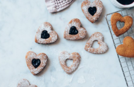

Galletas de avena, rosa y lima
Ingredientes
200 g de avena
100 g de harina integral
100 g de azúcar de coco
1 huevo
80 ml de aceite de coco derretido
Ralladura de 1 lima
2 cucharadas de agua de rosas
1 cucharadita de levadura en polvo
Una pizca de sal
Preparación
1.Precalienta el horno a 180 °C y forra una bandeja con papel de horno.
2.Mezcla avena, harina, azúcar, ralladura de lima, levadura y sal.
3.Bate el huevo con el aceite de coco y el agua de rosas.
4.Combina ingredientes líquidos con secos hasta formar masa.
5.Haz bolitas, aplánalas y hornéalas 12-15 min.
6.Deja enfriar antes de servir.
Dificultad:fácil
Cocina:saludable
Vegetariana:sí
Anticáncer:moderado
Celiacos:no
